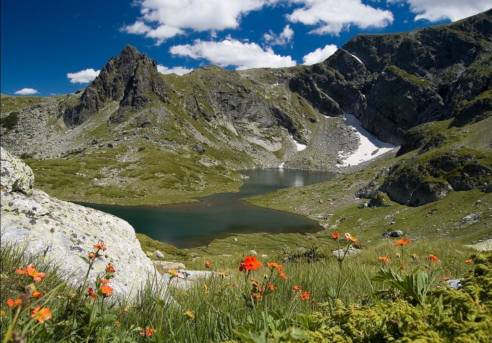
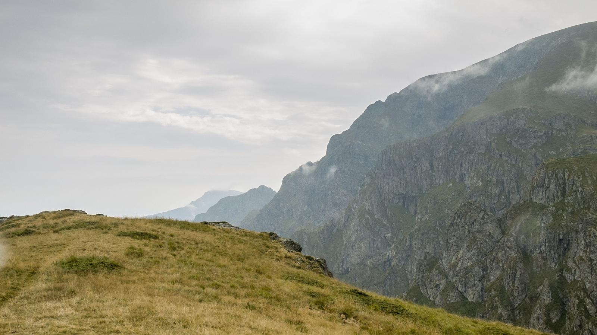
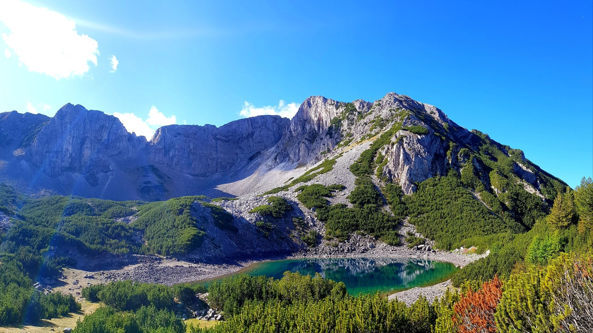
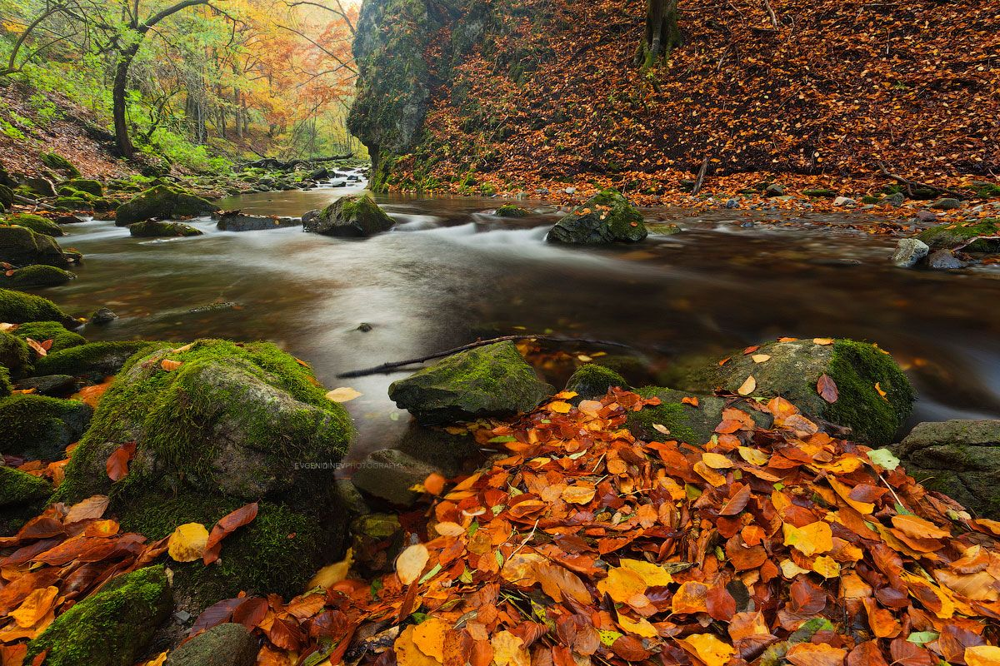
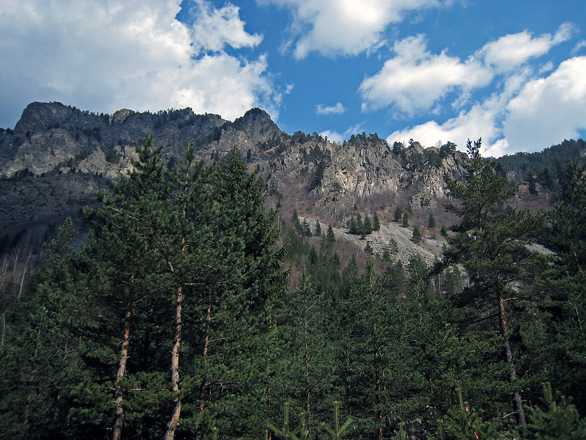

-

Централният рилски резерват е най-големият резерват на Балканския полуостров, намира се в Рила, България.
В него има обширни горски формации, високопланинска тревна растителност, ендемични и реликтни видове.
-

„Джендема“ е най-големият резерват, намиращ се в Националния парк „Централен Балкан“, и втори по площ в България. Името му идва от арабско-турски: cehennem, джендем – пъкъл, ад, както хората са наричали тази най-непристъпна част от планината.
Срещат се царският орел и скалният орел, кафявата мечка и вълкът, благородният елен, дивата свиня, а също и дива котка, невестулка, златка и много други.
-

Риломанастирска гора е резерват разположен в Рила, България.
Срещат се редица редки и застрашени видове, някои от които са включени в Червената книга на България – дивата коза, мечка, златка, вълк, пернатонога кукумявка, черен кълвач, глухар, лещарка, смока мишкар. Могат да се видят и еленът, сърната, лисицата, дивата свиня. От влечугите и земноводните се срещат: жабата дървесница, дъждовника, слепока, живородящия гущер. В тази част на планината се намира
-

Стенето е резерват разположен в Национален парк „Централен Балкан“, Стара планина, България.
Разнообразния релеф и голямата площ на резервата предразполагат към развитието на голям брой растителни видове. Установени са повече от 1000 различни вида растения. В резервата се опазват първични горски системи, които са типични за средната част на Стара планина. 79% от горите са чисти букови гори, които на места са на възраст над 200 години, като се срещат и отделни групи от дървета на възраст от 320 години.
-

Царичина е третият по големина резерват в Национален парк „Централен Балкан“, България.
Името на резервата идва от наименованието на цветето омайниче, което се използва в този район. На територията на резервата се намира единственото находище на бяла мура в средна Стара планина, което е и най-северното находище в света.